Overview of non-episodic training in CRONOS. We introduce CRONOS, a benchmark for RL fine-tuning of VLAs under infrequent scene resets.
Tasks share a scene (top left). Episodic training resets the scene before every task, whereas non-episodic training continues each task from where the previous one ended.
CRONOS covers diverse scenes and objects (middle left). Without frequent resets, object positions become increasingly dispersed, and rollout success decays after each scene reset (bottom).
Yet policies fine-tuned non-episodically generalize better to unseen object positions and perform better on unseen task sequences (right).
Abstract
Reinforcement learning (RL) is promising for adapting robot policies to unstructured real-world
environments. However, standard RL pipelines rely on episodic training with frequent scene resets,
which is impractical for real-world deployment due to the need for substantial human intervention.
While prior work has studied non-episodic RL in relatively small policies trained from scratch, its
behavior when fine-tuning modern large-scale pre-trained vision-language-action (VLA) models remains
underexplored. In this work, we introduce CRONOS, a simulation benchmark for RL
fine-tuning of VLAs under non-episodic scene resets. CRONOS leverages high-fidelity physics simulators
and adopts shared-scene multi-task settings.
Using CRONOS, we show that naively fine-tuning pre-trained policies fails in non-episodic settings due
to shifts in object configurations and end-effector poses; however, these challenges can be mitigated
through targeted reset allocation and by addressing biases in pre-trained models. Moreover, we find
that non-episodic training enhances long-horizon manipulation and improves generalization to previously
unseen object configurations and task sequences.
The Problem: Episodic Training Doesn't Scale
Standard RL pipelines assume episodic training: scenes are reset frequently to keep robots
from being trapped in low-reward states. In simulation this is free, but in the real world it requires
human intervention and substantial overhead, which has prevented RL from being deployed at scale in
real robotic systems.
Non-episodic RL algorithms aim to remove this bottleneck, but they were proposed before the surge of
VLAs and are confined to the simpler setting of training policies from scratch.
Episodic: the scene is reset before each task
Non-episodic: each task continues from the last one
The same four tasks in the same order. These are training rollouts from two different policies, trained with T = 80 (left) and T = 320 (right).
Episodic Multi-Task RL
Scene is reset before every task
Frequent human intervention
Hard to deploy at scale on real robots
CRONOS: Non-Episodic Scene Reset
Each task continues from where the last one ended
Occasional scene resets
Errors carry across tasks, as in real deployment
The CRONOS Benchmark
Continual Robotic Operations in
NOn-episodic Settings (CRONOS) runs on the high-fidelity ManiSkill3 physics
simulator and builds on the manipulation tasks from SimplerEnv and its extension.
Multiple tasks share a scene. CRONOS has four scenes with different backgrounds,
table meshes, and lighting. Each scene has its own 2 objects and 2 receptacles, giving 4
language-conditioned tasks of the form "put the [object] on the [receptacle]", or 16 tasks
in total. Each task runs for 80 interaction steps.
Episodic training resets the scene every T = 80 steps, while non-episodic training resets it
every T = 320 or T = 2560 steps, which is every 4 or 32 tasks. On reset, objects and
receptacles are randomly placed in one of 16 fixed positions.
Models. We fine-tune two off-the-shelf VLAs, OpenVLA and SpatialVLA, with PPO.
Wood table: ketchup and shovel, with yellow plate and cloth
Black table: carrot and banana, with red flat bowl and sheet metal
Blue table: bread and 7up can, with newspaper and carpet
Gray table: hamburger and plastic bottle, with frying pan and cutting board
Non-episodic training rollouts of each scene's four tasks (T = 320). Objects are never reset within a clip, and the robot arm returns to its home position between tasks.
Evaluation
The primary metric is success rate, tested on object and receptacle configurations seen (in-domain)
and unseen (out-of-domain) during training.
In independent-task evaluation, the policy has up to 80 steps to complete one task. In
sequential-task evaluation, the policy completes a sequence of tasks with 80 steps each. A
task not finished in time counts as a failure, and the policy moves on to the next one.
Research Questions
Q1How does RL fine-tuning VLAs perform out of the box, under non-episodic, multi-task settings?
Q2What are the key factors impacting the performance?
Q3What are the advantages of non-episodic training, aside from reducing the labor cost?
Key Findings
F1Non-episodic fine-tuning of pre-trained VLAs is ineffective. As the scene reset interval grows from T = 80 to 320 to 2560, OpenVLA's success rate drops from 65% to 37% to 0%, and SpatialVLA's drops from 65% to 25% to 2%.
F2Targeted resets improve non-episodic training. With SpatialVLA, end-effector reset (EER) adds 25 and 10 percentage points at T = 320 and T = 2560. Adding curriculum learning (CL) raises success from 14% to 40%, and heuristic scene reset (HSR) raises it from 14% to 64%. Learned scene reset performs as poorly as periodic reset, and the perturbation policy fails to adapt.
F3Non-episodic training brings stronger out-of-domain generalization. Policies trained with T = 320 beat their T = 80 counterparts on overlapping and cluttered scenes and on later tasks in a sequence, including unseen sequences. Both use the same interaction budget, and T = 320 uses a quarter of the scene resets.
Results
Pre-trained VLAs Struggle under Non-Episodic Resets
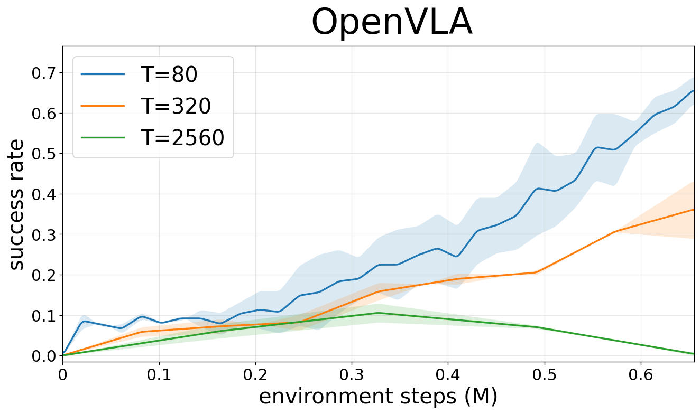
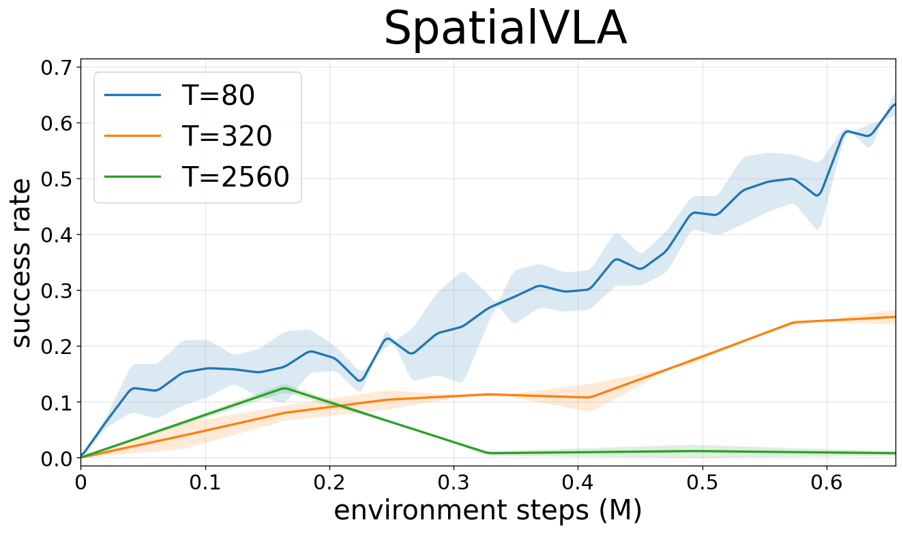
When directly fine-tuned in the non-episodic multi-task setting, learning performance dropped dramatically as the scene reset interval T increased from 80 to 320 interaction steps, and failed at T = 2560 steps.
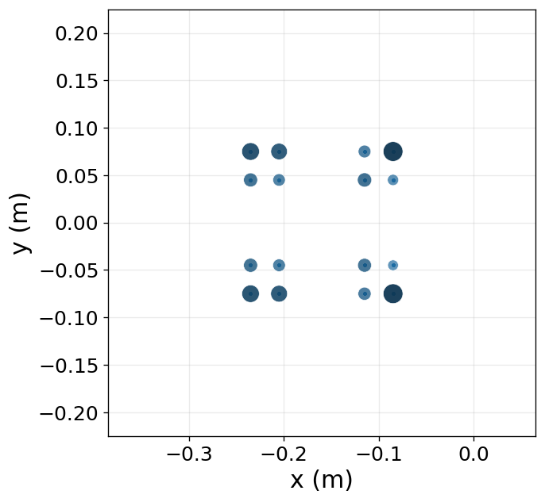
T = 80
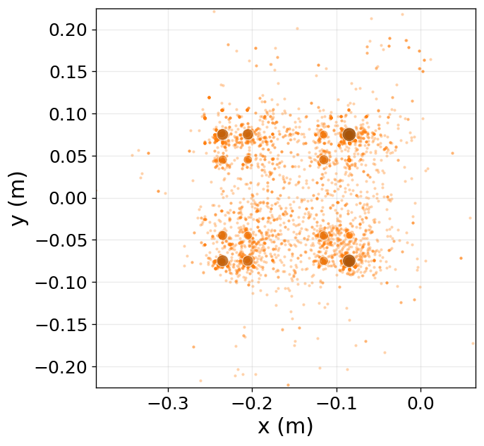
T = 320
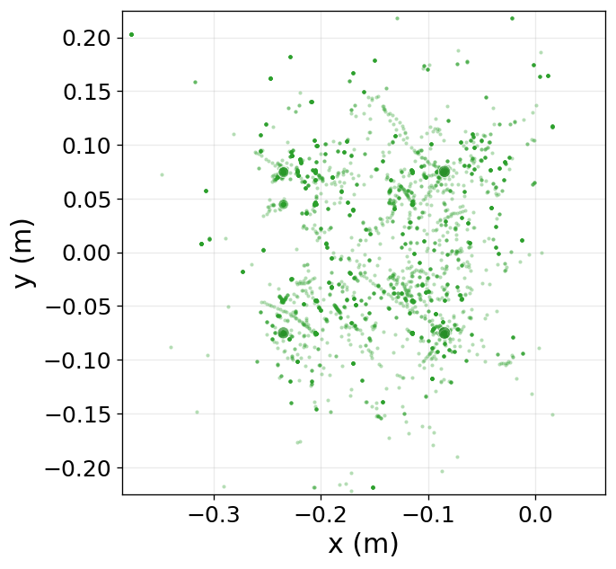
T = 2560
In non-episodic RL, each new task starts with the scene layout carried over from the previous task, so object starting positions become increasingly dispersed as the scene reset interval increases.
Targeted Resets Enable Non-Episodic Fine-Tuning
End-effector reset reduces pre-training bias
Demonstrations used to pre-train VLAs typically start from a fixed end-effector pose, but in non-episodic training each task starts from wherever the last one ended. Episodic end-effector reset (EER) returns the end-effector to its canonical pose at each task switch and leaves the scene untouched, with no human intervention.
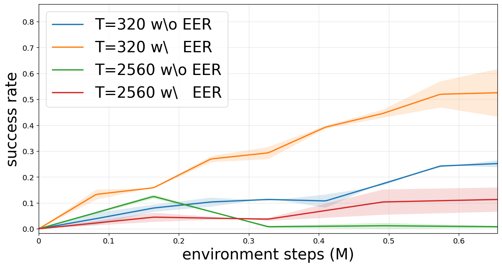
EER improves SpatialVLA's success rate by 25 and 10 percentage points at T = 320 and T = 2560.
Frequent scene resets early in training help
Curriculum learning (CL) resets the scene frequently early in training (T = 320), then less often (T = 2560), gradually exposing the policy to new scene layouts.
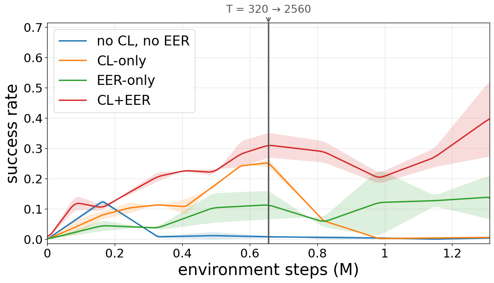
With EER, SpatialVLA fine-tuned with CL reaches 40% in-domain and 32% out-of-domain success, compared with 14% and 8% without CL.
Why learning stalls between resets
A T = 2560 training rollout on the blue table between scene resets, sped up 8×. By the end, only the newspaper is still on the table.
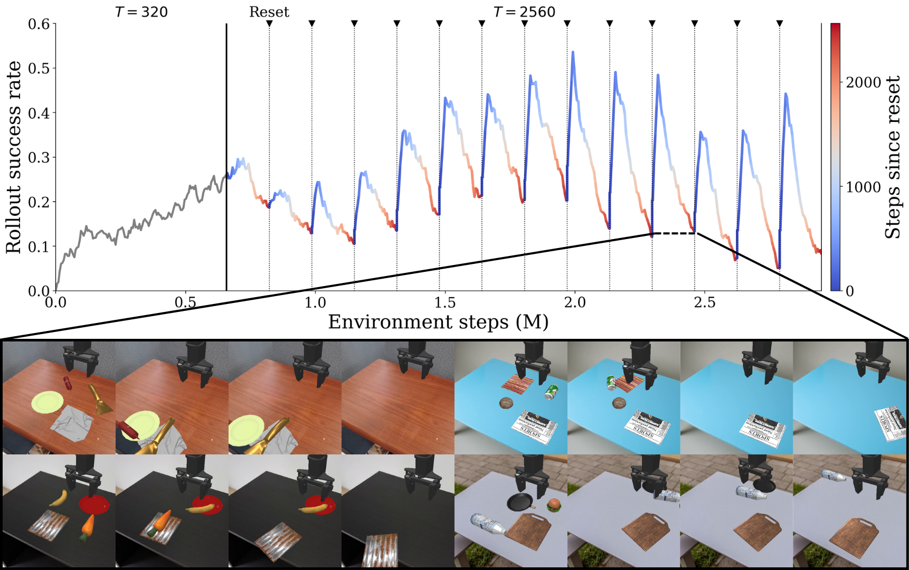
Rollout success peaks right after each scene reset and then decays. Objects become increasingly dispersed and eventually leave the reachable workspace, leaving few successful rollouts to learn from.
Scene reset strategies
Periodic Reset (PR): resets the scene every T = 2560 steps, and the policy proceeds directly to the next task in between.
Heuristic Scene Reset (HSR): before each task switch, also resets if an object has fallen off the table or lies outside the reachable workspace.
HSR-only: uses the same check, without the periodic reset.
Learned Scene Reset (LSR): adds an auxiliary reset task, such as "put the [object] on the table".
Perturbation Policy (PER): extends LSR with a second auxiliary task that perturbs the scene.
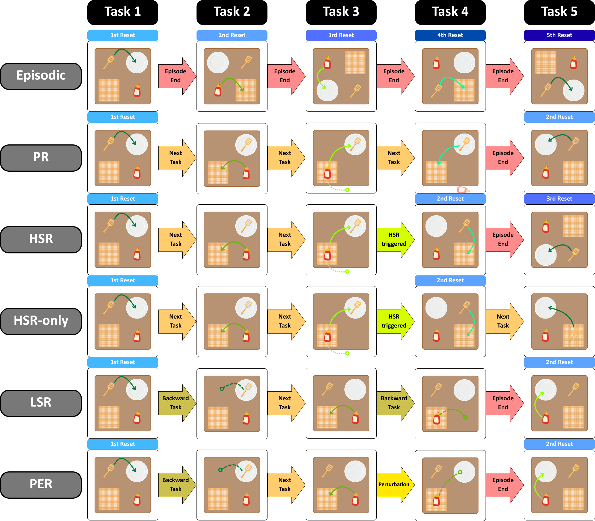
A blue label above a task marks a scene reset, and the arrow between two tasks shows how the policy proceeds to the next one.
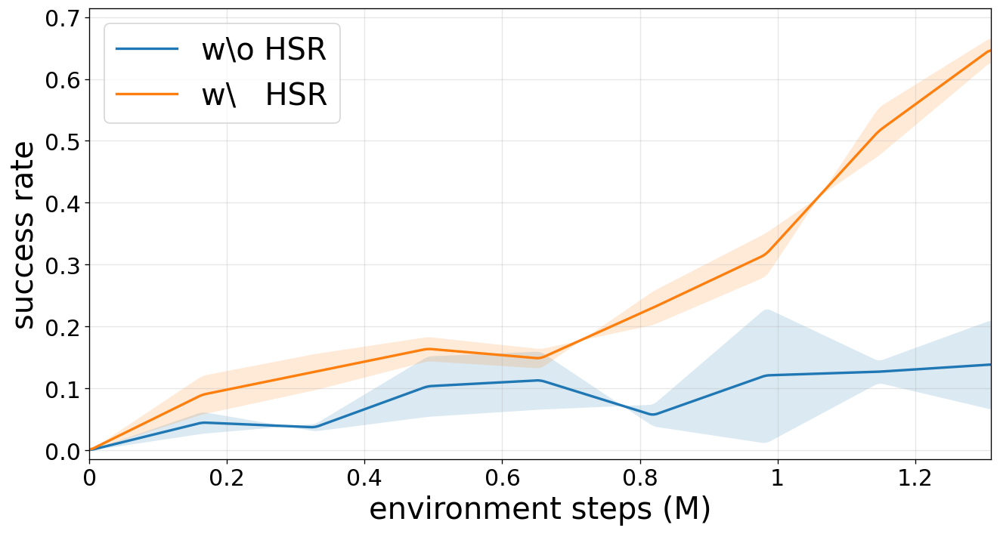
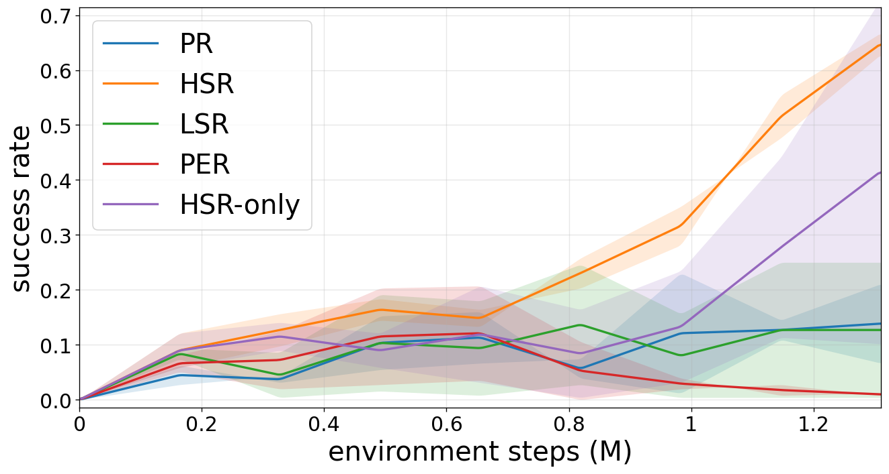
Left: HSR reaches 64% success, compared with 14% without it. Right: Only HSR and HSR-only show a sustained increase in success rate.
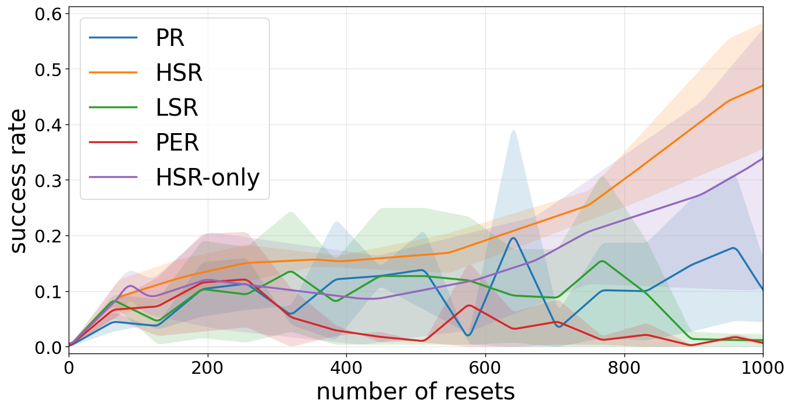
In-domain
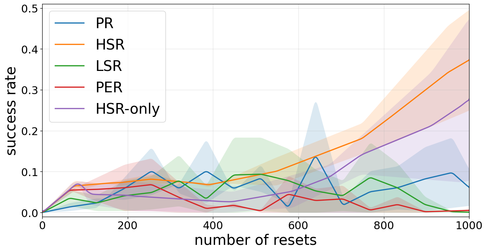
Out-of-domain
Under a fixed budget of 1000 resets, HSR and HSR-only still perform best, so HSR improves both interaction efficiency and reset efficiency.
Benefits Beyond Reset Efficiency
Under non-episodic training, policies perform tasks non-stop in a scene that becomes untidier over time. To test whether this makes them more robust, we train OpenVLA and SpatialVLA for 2.9M interaction steps at T = 80 and T = 320.
Exposure to dispersed scenes improves spatial generalization
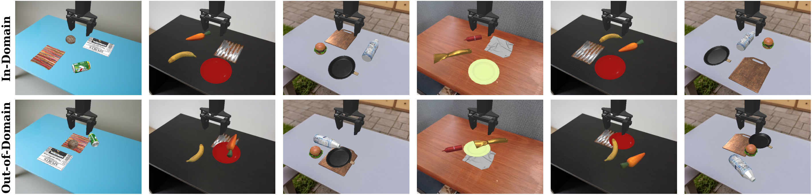
Out-of-domain scenes include layouts that never appear in training. Overlap places at least two objects within 12 cm of each other, and Cluttered drops objects onto the table from random positions.
"Put carrot on red flat bowl" Overlap, episodic (T = 80): fails
"Put carrot on red flat bowl" Overlap, non-episodic (T = 320): succeeds
"Put 7up can on newspaper" Cluttered, episodic (T = 80): fails
"Put 7up can on newspaper" Cluttered, non-episodic (T = 320): succeeds
Example rollouts in Overlap and Cluttered scenes. The table below gives average success rates.
Model
T
Overlap
Cluttered
OpenVLA
80
0.554
0.494
OpenVLA
320
0.593
0.536
SpatialVLA
80
0.552
0.512
SpatialVLA
320
0.643
0.550
Continual training improves sequential task execution
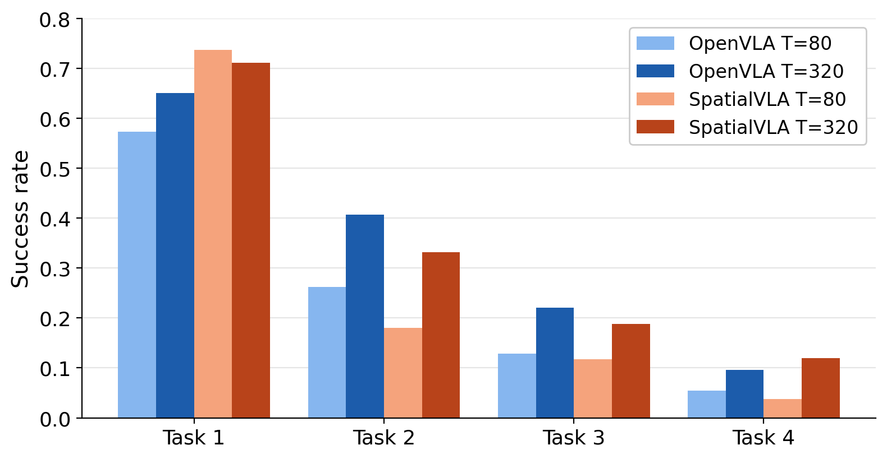
Seen task sequence
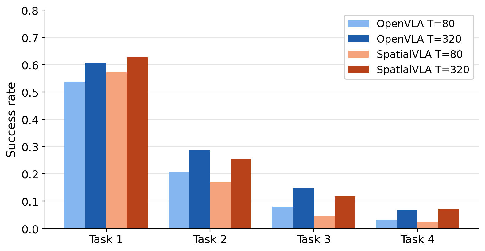
Unseen task sequence
Policies perform four tasks in a row in scenes initialized under the Overlap setting. Results are comparable on the first task, then T = 320 pulls ahead. On Task 2 of seen sequences, OpenVLA goes from 26% to 40% and SpatialVLA from 18% to 33%. By Task 4, success nearly doubles for OpenVLA and triples for SpatialVLA. Unseen sequences show a similar trend.
Limitations and Future Work
Heuristic scene reset relies on privileged simulator state to detect unrecoverable scenes, and replacing
it with a perception-based detector remains future work. Scene drift also continues to limit learning
under long reset intervals. Addressing this drift and extending CRONOS to contact-rich tasks are
important directions for future work.
BibTeX
If you find this work useful, please cite:
@article{wu2026cronos,
title = {{CRONOS}: Benchmarking Non-Episodic Reinforcement Learning
for Robotic Manipulation},
author = {Wu, Po-Yi and Fang, Djengo Cyun-Jyun and
Cheng, Dian and Ke, Tsung-Wei},
journal = {arXiv preprint arXiv:2611.05080},
year = {2026},
eprint = {2611.05080},
archivePrefix = {arXiv},
primaryClass = {cs.RO},
url = {https://arxiv.org/abs/2611.05080}
}
Acknowledgment
This research was supported by the National Science and Technology Council (NSTC), Taiwan, under Grants
114-2222-E-002-008-, 115-2222-E-002-006-, 115-2634-F-002-001-, 115-2218-E-002-026-, and 115-2634-F-002-012-.